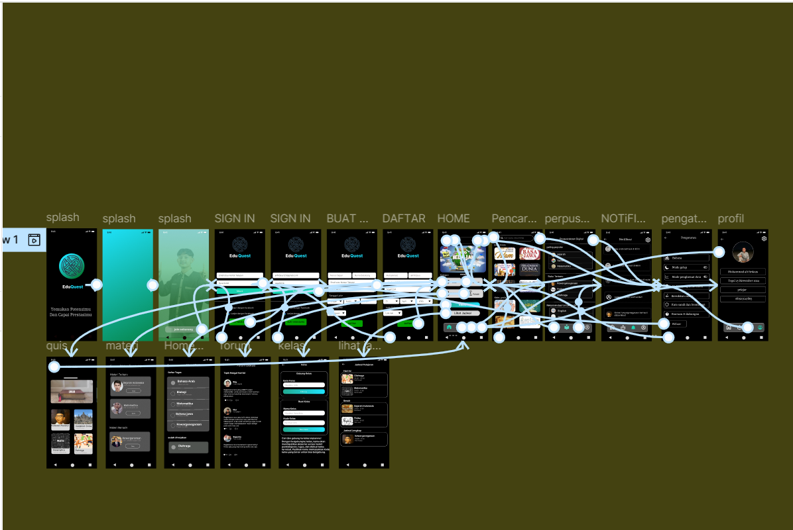

Project

APLIKASI DESAIN GRAFIS DAN MM
Pada semester 3 saya bersama teman saya yang bernama muh abdul raihan bekerja sama untuk membuat project mata kuliah desain grafif dan multimedia yang diampuh oleh bapak Muhamad Sahrul Syabani , S.Tr.Kom. Project ini berbasis aplikasi game yang kami beri nama GIONS memiliki tema aplikasi petualangan ladang seperti menanam merawat dan memanem bawang merah dan nantinya project ini bisa buat laporan uts dan uas.
APLIKASI KASIR PEMOGRAMAN WEB 1
Pada semester semester yang sama dan teman yang sama yaitu semester 3 dan bersama teman saya yang bernama muh abdul raihan terus bekerja sama untuk membuat project mata kuliah pemograman komputer yang di ampuh oleh bapak M. Nishom, M.Kom. Project ini berbasis aplikasi kasir yang kami beri nama kasir warung podomoro sebagai sempel nama kasir kami dan project ini terus berjalan karena buat keperluan tugas,uts dan uas.

UI/UX
Pada bulan juni 2024 saya mengikuti lomba UI/UX secara team dengan anggota yahya saputra, muh abdul raihan dan saya sendiri ainur rofiq disini kita bentuk team dengan nama the pawon dan aplikasi yang kita bikin adalah aplikasi pendidikan dengan nama EduQuest namun kami gagal ditahap awal penyisihan.